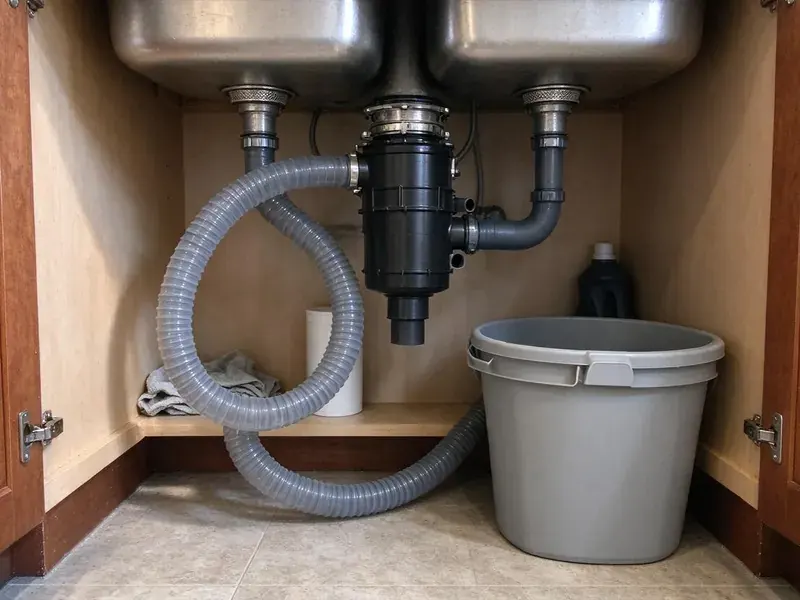

Kitchen Plumbing in Bixby, OK
Dealing with kitchen plumbing trouble in Bixby, OK? JBK Plumbing offers expert service for installations, repairs, and maintenance, making sure your kitchen runs smoothly.
- Same-Day Kitchen Plumbing Help
- Quick Local Service
- Licensed and Insured Plumbers
- Residential and Commercial Kitchens
Fast, Clean Kitchen Plumbing Service for Homes and Restaurants in Bixby, OK.
Call now and a licensed plumber can usually be there the same day.
Kitchen Plumbing Repair and Installation You Can Count On in Bixby, OK
JBK Plumbing handles everything under and around the kitchen sink, including sinks, faucets, garbage disposals, dishwasher drains, ice maker lines and grease traps. We diagnose the problem, explain the options and fix it with quality parts. Homeowners and restaurant managers in Bixby rely on us for quick, tidy work.
Our expertise includes:
- Drain cleaning and grease trap maintenance
- Set kitchen sinks, faucets and dishwasher air gaps
- Installing and repairing all major garbage disposal brands.

Additional Kitchen Plumbing Services in Bixby, OK
Our kitchen plumbing services in Bixby, OK cover sinks, disposals, dishwashers, and grease traps so your kitchen keeps running without backups or leaks.


Customers
Why Choose JBK Plumbing for Kitchen Plumbing in Bixby, OK?
The kitchen is one of the busiest rooms in the house, and a plumbing failure there brings things to a halt. We respond fast and carry the parts most kitchen jobs need.
- Local Expertise, We understand the specific plumbing challenges faced by homeowners in Bixby, from mineral buildup to aging drain lines.
- Local Knowledge, We know the specific plumbing codes and common issues affecting homes in Bixby, OK.
- Qualified Team, Our plumbers are licensed, insured, and regularly trained on the latest plumbing technologies and safety protocols.
Citywide Coverage
JBK Plumbing serves every neighborhood and community within Bixby for all kitchen plumbing needs. Whether you are in an older neighborhood or a newer subdivision, our team is ready to respond promptly to your service requests.
Experienced Team
Our team installs and repairs kitchen fixtures from Kohler, Moen, Delta, Blanco, Elkay and InSinkErator. They know how to plumb farmhouse, undermount and drop-in sinks correctly.
Safety-First Approach
Safety is our top priority for every kitchen plumbing job. We closely follow all local Oklahoma plumbing codes and industry safety standards, protecting your home and family during every repair or installation.
Trusted Certified Bixby Plumbing Services Professionals
At JBK Plumbing, we take pride in providing certified plumbing services throughout Bixby, OK. Backed by leading industry credentials, our experienced plumbers combine technical skill with genuine customer care. Whether it is repair, installation, or maintenance, we follow strict safety and quality standards to deliver long-lasting results you can trust.
Call Us Now PHCC Plumbing Contractor Recognition
PHCC Plumbing Contractor Recognition Better Business Bureau (BBB) Accreditation
Better Business Bureau (BBB) Accreditation Angi Certified Pro
Angi Certified Pro ISO 9001 Quality Management Certification
ISO 9001 Quality Management CertificationProven Kitchen Plumbing Solutions in Bixby, OK
Grease Trap Installation in Bixby, OK
For commercial kitchens or homes with high grease output, a grease trap is essential to prevent drain clogs and comply with local wastewater regulations. JBK Plumbing provides professional grease trap installation services, making sure the unit is correctly sized and plumbed into your system. We understand the specific requirements for businesses in Bixby, OK to maintain proper waste management.

InSinkErator Installation in Bixby, OK
InSinkErator is one of the most popular disposal brands, and we install the full line from Badger to Evolution series. We use the brand's quick-lock mounting and follow its specs for electrical and drain connections. Upgrading to a quieter Evolution model is a common request. We also register the warranty for you.
Garbage Disposal Repair in Bixby, OK
Is your garbage disposal humming but not grinding, or worse, completely jammed? Our technicians are skilled in diagnosing and repairing all common garbage disposal problems. We can clear clogs, fix motor issues, and replace worn-out components for brands like InSinkErator, Waste King, and Moen. Don't let food waste pile up, we will get your disposal running smoothly again in Bixby, OK.
Grease Trap Cleaning and Repair in Bixby, OK
Grease traps need regular cleaning to work properly. We clean small under-sink traps, inspect baffles and gaskets, and repair cracked lids or inlet tees. For larger interceptors, we coordinate pumping and inspect the structure. Keeping a maintenance log helps with health and pretreatment inspections.
Dishwasher and Ice Maker Hookups in Bixby
New dishwashers need a hot water line, a drain to the disposal or tailpiece and an air gap or high loop. Refrigerator ice makers need a dedicated cold line with a shutoff. We install both with braided or copper lines and test for leaks. This stops the slow drips that damage cabinet bottoms and floors.
InSinkErator Installation & Service in Bixby
As a leading brand, InSinkErator garbage disposals are known for their dependability and performance. JBK Plumbing provides expert InSinkErator installation, ensuring your new unit is correctly wired and plumbed for proper function. We also offer repair and maintenance services for existing InSinkErator models in Bixby, addressing common issues like motor hums, grinding noises, and leaks. Count on us to keep your InSinkErator running smoothly.
Garbage Disposal Replacement in Bixby, OK
When a garbage disposal reaches the end of its lifespan, replacement is often the most cost-effective choice. We provide fast, tidy garbage disposal replacement services, removing the old unit and installing a brand new one with minimal disruption. Our team will dispose of your old unit responsibly and make sure the new one is perfectly integrated into your Bixby, OK kitchen plumbing.

Garbage Disposal Installation and Replacement in Bixby
We install new disposals and replace worn ones with models from InSinkErator, Waste King and Moen. We match horsepower to your household, from 1/3 HP to 1 HP units for heavy use. Each install includes a new mount, discharge tube and dishwasher knockout when needed. We test the unit and check for leaks before we leave.
Trusted Kitchen Plumbing Near Me in Bixby, OK
When you search for 'kitchen plumbing near me' in Bixby, OK, JBK Plumbing is your dependable local choice. We pride ourselves on fast service and a solid understanding of the plumbing common across our area. Our technicians are always prepared to address your kitchen plumbing needs efficiently.
Our local presence means we can offer fast response times for kitchen plumbing emergencies and routine service calls throughout Bixby. You can count on our team to provide knowledgeable and friendly service, ensuring your kitchen plumbing issues are resolved quickly and correctly.
JBK Plumbing at a Glance
- Fully licensed plumbing team covering Bixby, OK
- Same-day appointments and 24/7 emergency response
- Upfront, flat-rate pricing before work begins
- 4.8-star rated by 318+ Oklahoma customers
Bixby Map
Bixby Information
- Population
- 30,698
- Area codes
- Local
- Service area
- Bixby and communities within 40 miles
- Nearby
- Broken Arrow, Tulsa, Owasso, Muskogee
Much of Oklahoma has moderately hard to very hard water, especially in western areas, which leaves scale in water heaters and fixtures. Proper kitchen plumbing in Bixby, OK keeps mineral scale, grease and aging drain lines from backing up your sink.
Expert Services
Trust our professionals for reliable JBK Plumbing solutions in Bixby, OK.
Our Specialized Plumbing Services in Bixby, OK
At JBK Plumbing, we provide a complete range of plumbing services across Bixby, OK. From leak detection to full system installations, our team ensures fast, precise, and affordable service for both residential and commercial properties. Explore our core services below:


How Our Kitchen Plumbing Process Works in Bixby, OK
Here is how we get your kitchen back to normal.
Request a Quote
Contact us at (405) 507-8396 or fill out our online form to schedule your kitchen plumbing service. We'll gather details about your issue and set up a convenient appointment time.
On-Site Assessment
A licensed plumber will arrive at your Bixby home, diagnose the kitchen plumbing problem, and explain the necessary repairs or installation options. You'll receive a straightforward, upfront estimate.
Expert Service
Upon your approval, our technician will perform the work carefully and efficiently, using quality parts and following all local plumbing codes. We ensure your kitchen plumbing is restored or upgraded properly.
Frequently Asked Questions About Kitchen Plumbing in Bixby
Simple repairs like a trap or supply line usually cost $125 to $300. Disposal installs run $250 to $650 with the unit, kitchen sink installs $350 to $900, and commercial grease trap installs usually start around $1,500.
For commercial kitchens in Bixby, grease traps should typically be cleaned every 1 to 3 months, depending on the volume of use and local regulations. For residential use, if you have a grease trap, annual inspection and cleaning are usually enough.
Persistent kitchen sink clogs are often caused by a buildup of grease, food particles, soap scum, and hair in the drain line. Hard water can also leave mineral deposits that narrow pipes. Using chemical drain cleaners can sometimes make the problem worse or damage pipes.
To prevent kitchen drain clogs, avoid pouring grease or oil down the drain, use a drain strainer to catch food particles, and run cold water while operating your garbage disposal. Now and then, flush your drain with hot water and a bit of dish soap. These habits can significantly reduce the risk of blockages in your Bixby home.
For commercial kitchens, the frequency of grease trap cleaning depends on usage and size, but usually every 1 to 3 months is recommended. For residential applications, routine cleaning isn't usually necessary unless you have a small trap and cook with a lot of grease. Regular professional cleaning prevents severe clogs and ensures compliance with local waste regulations in Bixby.
If the unit is under eight years old and just jammed, repair often works. If it leaks from the housing or the motor is failing, replacement is usually better.
While it's possible for experienced DIYers, professional installation is the safer choice. It involves electrical wiring, secure plumbing connections, and getting proper drain alignment. Incorrect installation can lead to leaks, electrical hazards, or damage to your sink and pipes. Our plumbers in Bixby provide safe and compliant installation.
Small under-sink traps often need cleaning every few weeks, while larger interceptors are pumped every one to three months. Your local utility may set a specific schedule.
What People Are Saying About Our Plumbing Experts?

Mark T.
When our office needed drain cleaning, JBK Plumbing provided quick, reliable service. The plumber arrived on time and made sure every drain flowed perfectly before leaving. Very satisfied.
Drain Cleaning · Bartlesville, OK
Laura S.
I scheduled a water heater replacement, and the team made the process smooth and affordable. The new unit works perfectly, and they cleaned up after completing the job.
Water Heater Replacement · Bartlesville, OK
Daniel K.
A pipe burst at 11 pm and they actually answered. The plumber showed up within the hour, shut everything down, and had us back to normal the next morning. Could not ask for more.
Emergency Plumbing · Bixby, OK
Patricia H.
We had a slab leak that two other companies could not find. JBK Plumbing located it in under an hour, explained our options, and the price matched the quote to the dollar.
Slab Leak Repair · Bixby, OK
Emily R.
I called JBK Plumbing for plumbing repair, and the technician was fast, polite, and thorough. They explained the problem clearly and fixed it the same day. I will definitely hire them again. Highly recommended!
Plumbing Repair · Stillwater, OK
James P.
Our commercial plumbing system had a leak under the sink, and JBK Plumbing handled it professionally. The plumbers arrived quickly and restored everything without disruption to our customers.
Commercial Plumbing · Bartlesville, OK